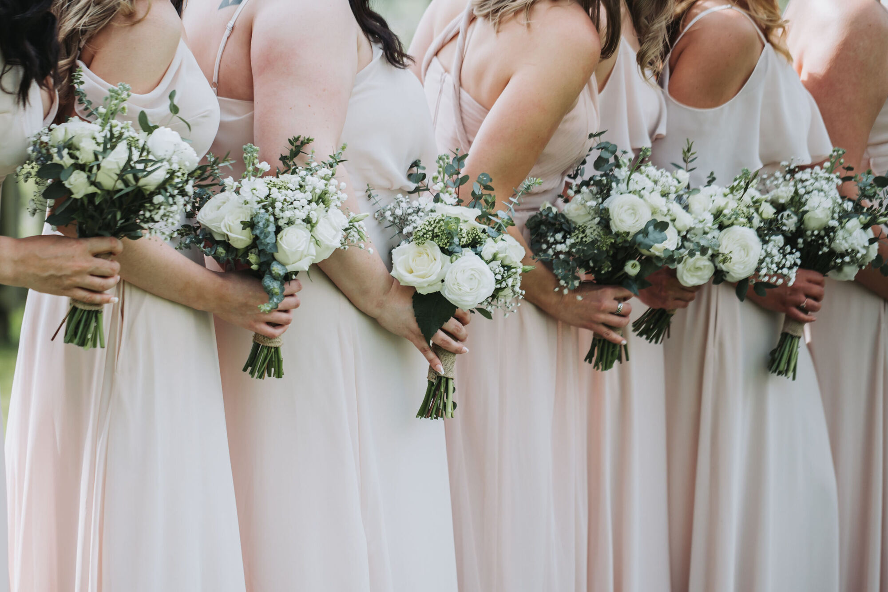
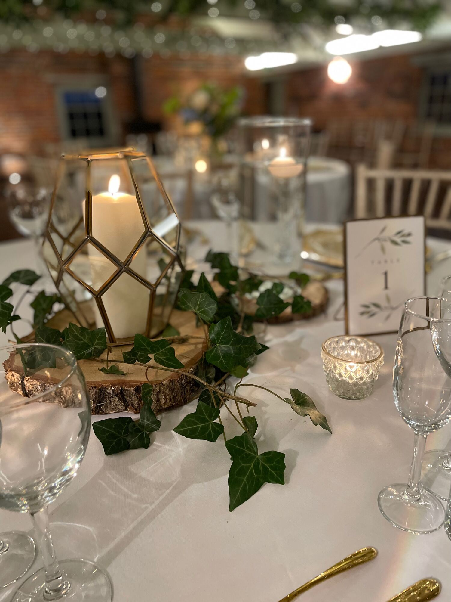
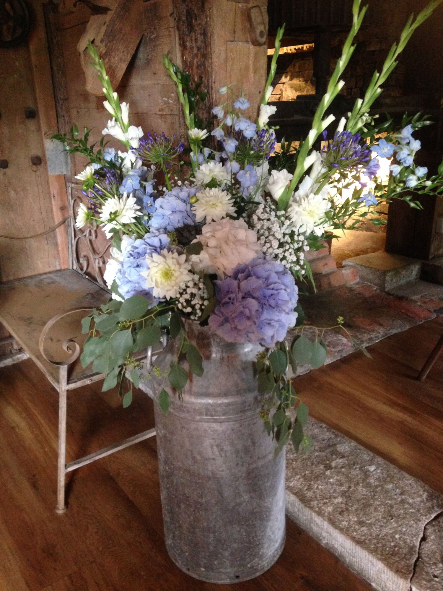
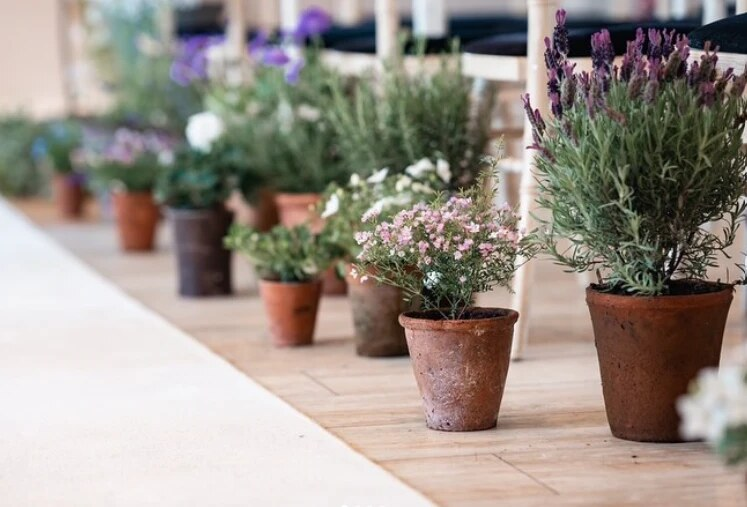
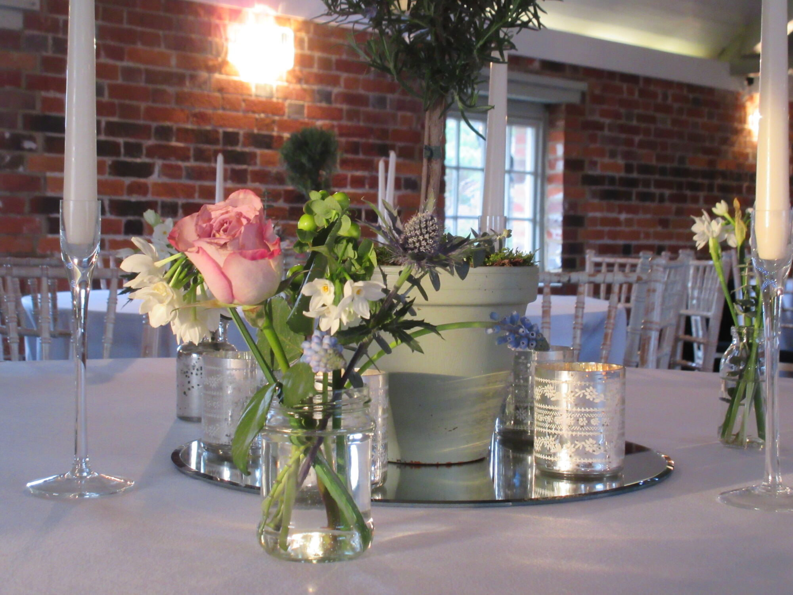
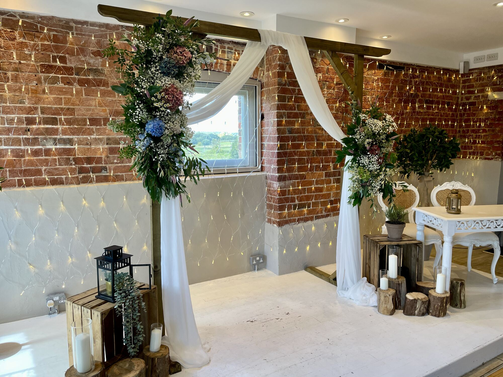
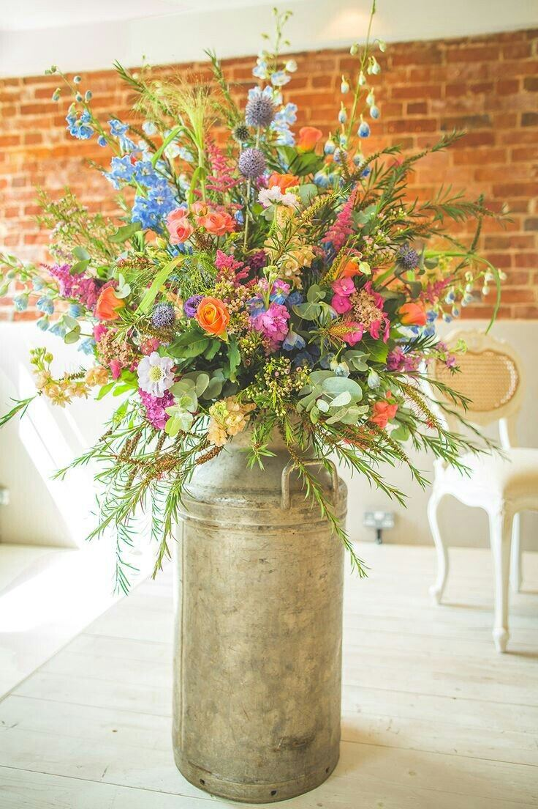

Wedding flowers
Seasonal, simple and home-grown
Every wedding is different
Lucy loves simple, beautiful arrangements. She uses in-season flowers wherever she can, and almost every arrangement includes something home-grown, so your flowers are as fresh and fragrant as possible. She'll work with your ideas and your budget.


Arranged flowers
Bouquets, buttonholes and table centre pieces
Lucy has a large collection of vintage-style containers to arrange your flowers in, from milk churns to glass bottles and jugs. You're also welcome to bring your own.
Because every couple's ideas are different, flowers are priced by quote. The best first step is a chat with Lucy about what you have in mind.

Potted flowers & trees
Living flowers you hire, not buy
Lucy's potted flowers grow in lovely containers, from pretty pots to vintage buckets. Because you're hiring them, they cost less and nothing goes to waste. They change with the seasons and are usually home-grown, so they're far more likely to smell wonderful.
Potted flowers come as part of the River Window set-up and the apple crate set-up, and you can hire potted olive trees on their own.
I like to work personally with each couple, so we share the same ideas for the day.Lucy, IncaBella


